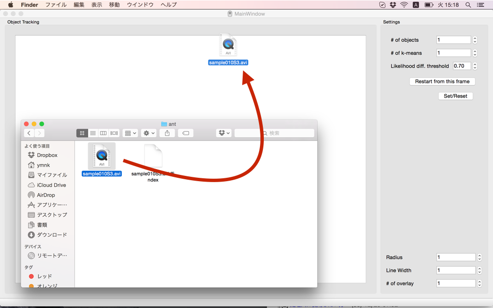
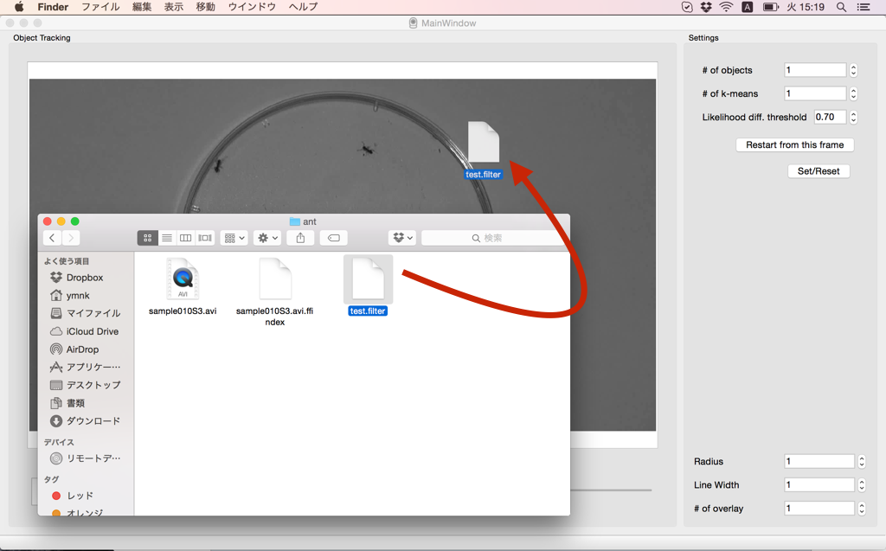

DetectCenterでは、FilterGeneratorで作ったフィルタを使って、トラッキングアルゴリズムを動作させる。この工程で物体追跡を行う。作ったフィルタの精度（追跡したい物体のみが白くなっているか）がトラッキングの正確をあれする。上手く追跡出来無いなら、もう一度フィルタを作り直すか、トラッキングパラメータを見直す。又は、次の工程で、人力で追跡補正を行う。
入力した画像とトラッキング結果を表示する。
トラッキングで使用する値を変更する。個体数や、動物の大きさを設定する。
Radiusは、表示点の大きさ。Line Widthは、軌跡の幅。of overlay数でいくつのフレームの軌跡を描画するかを決定する。これらの値は、トラッキングアルゴリズムに関係ないので、変更しても精度の向上には繋らない。
UMATrackerは、複数のトラッキングアルゴリズムを選択し、使える。ここで、Group Tracker GMM、RMOTを選択できる。デフォルトでは、Group Tracker GMMが選択されている。
フィルタの読込・ビデオデータの読み込み。トラッキングした座標をCSVに保存する。
DetectCenterでは、最初に動画を読み込む。
次に、FilterGeneratorで作ったフィルタを読み込ませる。
次に、トラッキングアルゴリズムを使う際に必要となる数値を設定する。何れか一つを選択し、設定すればよい。
Group Tracker GMMを選択（デフォルト）すると、上の様な画面がWindow内の"トラッキングパラメータ"の部分に表示される。
追跡したい物体の数を入力する。動画内に移っている個体数を入力すればいい。
基本的に#of objectsと同じ数を入力する。
前フレームとの形の変化度が規定数値以下の場合は同じ物体だとみなさない。ここの数値は経験(Try&Error)によって変化させる。
現在のフレームからトラッキングをスタートさせる。動画の途中で、追跡したい物体が増えた場合に使用する。個体が増えたフレームで一時停止を行い、"#of object"の数値を変化させ、再び再生ボタンをおすと、上手くトラッキングしてくれる。
一番初めに、パラメータを設定した後におすボタン。
RMOTを選択すると、上の様な画面がWindow内の"トラッキングパラメータ"の部分に表示される。
物体の倍程度を囲む様に調整をおこなう。この値は、経験をつんで、変化させていく。
トラッキングアルゴリズムを動作させる。
1.現在"トラッキング結果"画面に表示されているフレームからトラッキングを行うなら、
2.最初のフレームからトラッキングアルゴリズムを動作させたいなら、
前述したが、動画の途中で、個体数が変動する場合、トラッキングアルゴリズムは上手く動作しない(GroupTracker GMM、RMOTの場合)。これは、デフォルトのトラッキングアルゴリズムは個体数を決定した上で上手く動作するアルゴリズムだからである。
個体数の変動がおきた場合、
上手くトラッキングを続けられる。
トラッキングアルゴリズムを動かした後は、結果を保存する。この工程をやらなければ、結果は得られない。"File >> Save to CSV"を選択し、保存したいディレクトリとファイル名をしていする。
出力結果は、CSV形式で保存される。最初の行には、x0,y0,x1,y1。次からの行には、フレームナンバー、個体ナンバー0のx座標、個体ナンバー0のy座標、個体ナンバー1のx座標、個体ナンバー1のy座標。。。が保存されている。